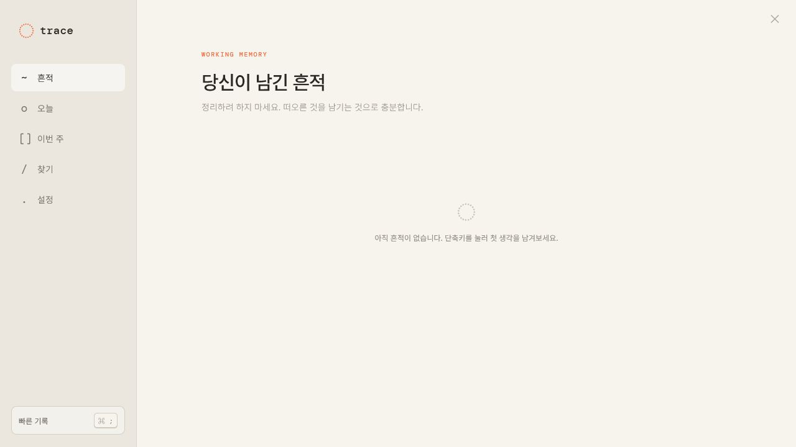
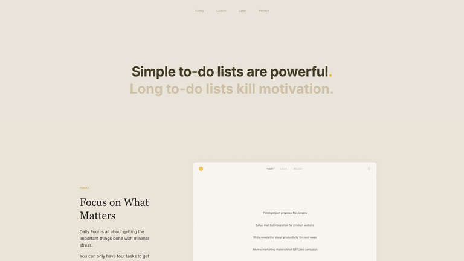
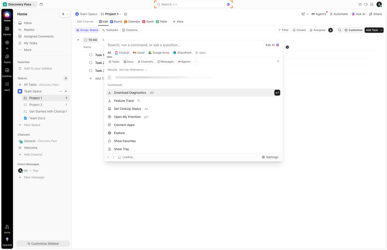
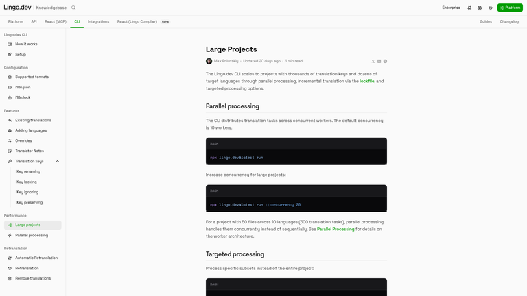
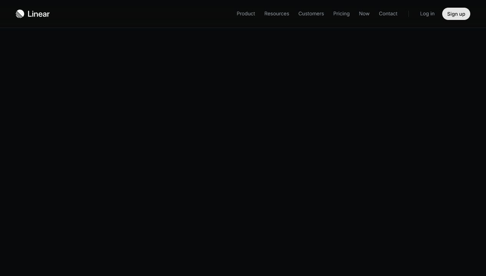
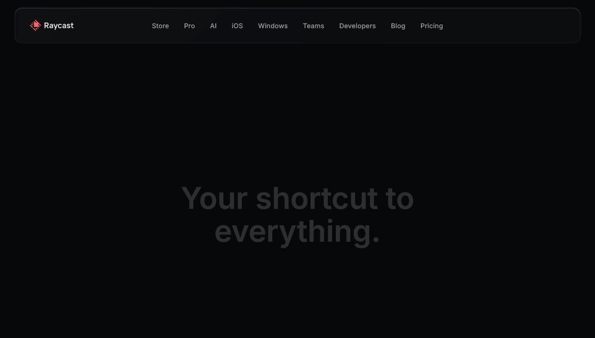
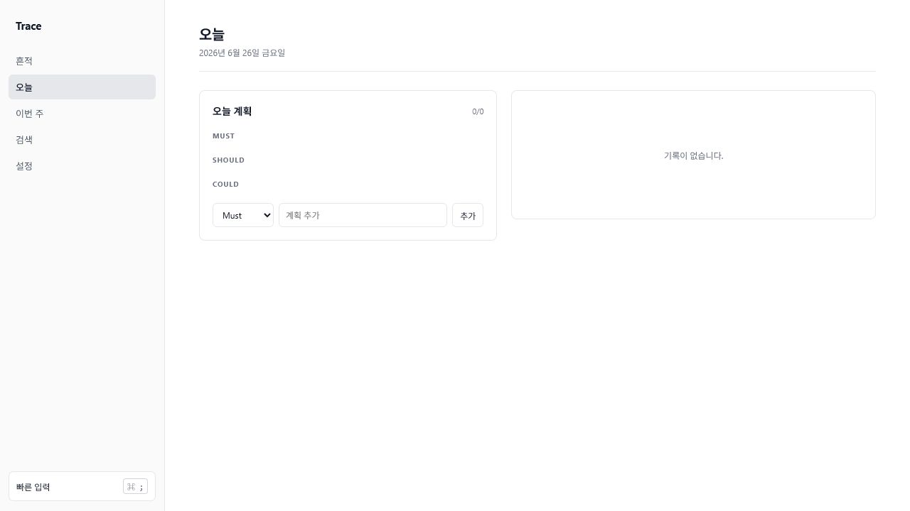

Design Improvement: Trace Desktop
TL;DR
감성적 저널 화면을 제거하고, 오늘 계획과 의사결정 맥락이 한 화면에서 연결되는 전문 도구 구조로 변경했다.
Current State

기존 화면 — 넓은 빈 공간, 감성 카피, 장식 요소가 업무 도구의 밀도를 낮췄다.Improvement Ideas
1. 오늘을 실행 화면으로 전환
Must / Should / Could 계획과 자동 복원된 기록을 나란히 배치한다. Daily Four의 제한된 우선순위 패턴에서 착안했다.

Daily Four — 중요한 소수 작업에 집중시키는 구조 [Lazyweb]오늘
├─ 오늘 계획: Must / Should / Could
└─ 오늘의 기록: 완료 / 결정 / 피드백
2. 목록을 조작 가능한 업무 행으로 변경
기록 행은 시간·내용·태그·분류를 한 줄에 보여주고 hover 시 삭제를 노출한다. ClickUp의 밀도 높은 레코드 행 패턴을 축소 적용했다.

ClickUp — 상태와 행 액션을 가까이 배치한 데이터 테이블 [Lazyweb]3. 상태는 체크박스로 직접 조작
완료 여부는 별도 일지 작성 없이 체크박스 한 번으로 끝낸다. Lingo의 명확한 완료 상태 표현을 참고했다.

Lingo — 섹션별 상태와 완료 체크 구조 [Lazyweb]4. 시각 언어를 중립적인 도구 스타일로 정리
화이트 기반, 1px 회색 경계, 6–8px radius, 텍스트 중심 네비게이션으로 변경했다. Linear와 Raycast의 절제된 대비와 키보드 중심성을 참고했다.

Linear 공식 사이트 [Web]
Raycast 공식 사이트 [Web]Updated State

재설계 결과 — 계획과 맥락을 한 화면에서 처리하는 생산성 도구.What's Working
- Sidebar + Main 구조와 독립 Quick Capture는 유지했다.
- 로컬 저장과 빠른 캡처를 핵심 경로로 보존했다.
- 태그와 분류는 보조 정보로 낮은 시각적 우선순위를 유지한다.